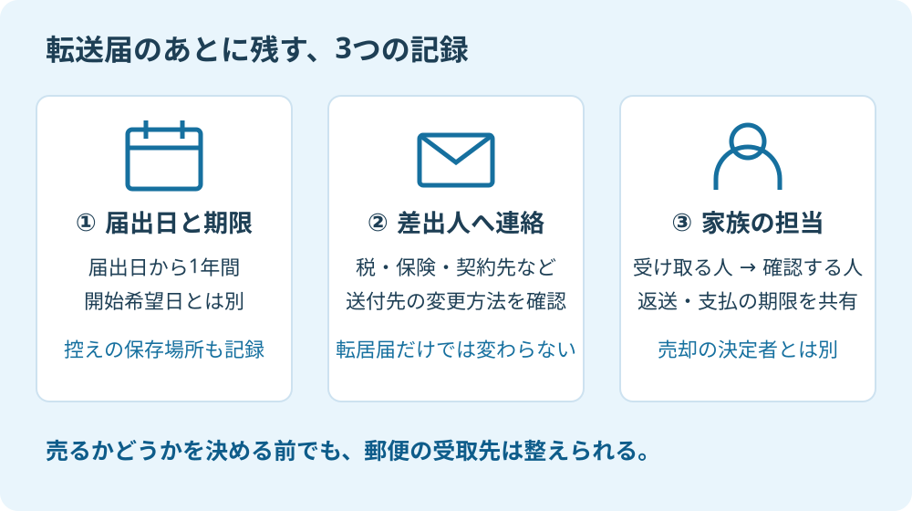

親の施設入居が決まると、部屋の荷物や費用の支払いが先になります。空いた実家の郵便受けは、帰省した家族が見るつもりのまま。その状態で査定を頼むと、必要な通知や書類が、誰の手元にあるのか分からなくなります。
大石浩之（磐田市／不動産業）です。宅地建物取引士として、私は郵便の管理を売却準備の入口と考えます。価格の話より地味ですが、書類を受け取り、内容を確認できる人がいることは、売る場合にも持ち続ける場合にも役立ちます。
郵便転送の1年は、届出日から数える
日本郵便の「転居・転送サービス」は、旧住所あての郵便物等を新住所へ無料で転送する仕組みです。転送期間は届出日から1年間。転送開始希望日から1年間ではありません。登録には3～7営業日かかると案内されています。2026年9月21日に公式情報を確認しました。
例えば、施設へ移る日より前に届け出た場合、期間の起点は入居日にはなりません。「引っ越してから1年」と家族の予定表へ書くと、確認する時期がずれます。届出の控えにある日付と、開始を希望した日を別々に残してください。
期間終了後、日本郵便は郵便物等を差出人に返還します。自動で実家への配達に戻るつもりでいると、行き違いが生じます。継続する場合は、再度の転居届が必要です。私は更新の要否を考える日も、最初の届出時に決めることを勧めます。
日本郵便は2026年3月13日、9月21日を配達日から配達休止日へ変更すると発表しました。普通扱いの郵便が届かなくても、この日の郵便受けだけで転送の不具合とは判断できません。一方、速達・書留、レターパック、ゆうパックなどは祝日等も配達対象です。
売却準備の書類を待つなら、差出人に発送日と郵便の種類を聞きます。「祝日だから全部止まる」「月曜日だから届く」のどちらにも寄せません。配達日の確認と、転送の登録が済んでいるかの確認は、別の作業です。
差出人への住所連絡を、転送と別に進める
日本郵便への転居届だけで、行政機関や企業の登録住所が変更されるわけではありません。同社は、転居届の情報を行政機関・企業等の第三者へ提供しないと案内しています。転送を頼む手続と、差出人へ送付先を連絡する手続を分けて考えます。
私は無料の転送を、生活が変わる時期の助けとして評価します。入居の荷造りと、すべての差出人への連絡を同じ日に終わらせる必要がない。届いた郵便から連絡先を拾える点も、ご家族には使いやすい仕組みです。
ただし、転送届を出したら郵便の仕事は終わり、という扱いには反対です。期限は残り、送付元の登録も残ります。届いた封筒を捨てる前に、差出人、変更方法、連絡した日を一行ずつ控える。私はそこまでを一組の準備にします。
| 確認する差出人 | 窓口へ聞く内容 | 家族が残す記録 |
|---|---|---|
| 固定資産税などの通知元 | 施設入居後の送付先を変える方法 | 対象の通知・手続日・次の送付先 |
| 銀行・保険会社 | 登録住所と郵送先の変更に必要な資料 | 本人が行う部分・家族が補助する部分 |
| 電気・水道などの契約先 | 空き家で継続する契約の連絡先 | 契約番号・通知先・担当者 |
| 仲介会社・司法書士等 | 書類の送付先と受領後の連絡方法 | 宛名・受取担当・返送期限 |
この表は、全世帯に同じ手続が必要という意味ではありません。契約や通知の種類で取扱いは異なります。郵便の転送、住民票の異動、登記上の住所変更も別の確認です。郵便が届いたことを理由に、他の手続も済んだとは扱わないでください。登記・税務の個別判断は専門家に確認を。
書類を探すところからなら、親の家の書類と名義を整理する手順も役立ちます。家族で共有する一覧には内容の要約を残し、口座番号などを必要以上に広げない形がよいと考えます。

1年の管理表は、日付と担当者を一緒に残す
施設入居後の郵便管理では、転送の期限だけでなく、誰が確認するかを同じ表に残します。以下は日本郵便の規定ではなく、私が提案する家族用の管理例です。届出日を起点にし、公式の期限と家族が決めた確認日を区別します。
| 時期の目安 | 家族で確認すること |
|---|---|
| 届け出る前 | 本人の意向、転送先で受け取れる宛名、必要な本人確認資料 |
| 届出時 | 届出日・開始希望日・控えの保存場所・主担当 |
| 登録後の最初の月 | 届いた郵便の差出人を一覧にし、住所連絡を始める |
| その後は月1回 | 未連絡の差出人、未開封の書類、返送期限を確認する |
| 届出から10か月の時点 | 転送継続の要否を検討し、再度の届出の準備を確認する |
「10か月」は、期限直前の慌ただしさを避けるための私の目安です。日本郵便が定める更新期限ではありません。実際の申出時期や期間の取扱いは郵便局へ確認します。届出日を忘れたまま、入居日で代用しないことが先です。
施設へ届ける場合は、施設側にも郵便の受取方法を確認します。部屋番号が必要か、本人へ渡すのか、家族が取りに来る形か。入居契約の担当者が郵便の内容まで管理してくれるとは限りません。家族の住所を希望する場合も、本人の状況と希望を伝え、日本郵便に利用方法を確認してください。
受け取る人と開封して判断する人が違うなら、渡す日を決めます。例えば「毎週日曜日に未処理分を共有し、期限のある通知は受領日に連絡する」という家族内の約束です。これは私の運用例で、公的な保管期限ではありません。担当者が不在の週に代わる人も一人決めます。
空き家の管理サービスを使っていても、郵便受けの確認と、転送・開封・期限管理が契約に含まれるかは別です。写真を撮って報告するだけか、回収も頼めるかを確認します。空き家管理サービスを選ぶ5つの確認で、作業範囲を先にそろえてください。
磐田・袋井の実家は、受取人と売却の決定者を分ける
磐田市や袋井市に実家があり、ご家族が市外に住んでいる場合も、郵便の受取担当と売却の決定者は分けて整理します。家族の一人に通知を集めることと、その人が所有者に代わって契約できることは同じではありません。
私はこう考えます。家を売るかはまだ決めなくていい。郵便を誰が受け取るかまで、未定のままにしない。売却を急がないためにも、税金や管理の通知を受け取り、維持に何が必要かを見える状態にする。その準備なら、持ち続ける結論になっても無駄になりません。
私にも迷うところはあります。施設の生活が始まったばかりの家族へ、どこまで一度に準備を頼むかです。全部の書類をそろえるよう言えば、作業が重くなる。だから最初は、届出の控えと受取担当の名前だけでもよいと考えます。次に届いた一通を、その次の作業の入口にします。
仲介会社には、「所有者は誰か」「本人へ連絡できる方法」「家族の窓口」「書類を送る先」を別々に伝えます。本人の確認については、老人ホーム入居後の売却と本人確認も参照してください。代理・登記・相続に関わる個別判断は専門家に確認を。
今日やることは、届出日を一行残すこと
今日できる確認は、転居届の届出日と、次に郵便を確認する人を一行に書くことです。まだ届け出ていない場合は、本人の意向と受取先の方法を確認する担当を決めます。家の売値を決める必要はありません。
- 届出日と開始希望日を分けて記録する。
- 封筒の差出人から、住所連絡の未処理分を拾う。
- 受取担当と売却の決定者を混同しない。
富士ヶ丘サービスでは、介護と不動産を一体で相談できる入口を設けています。磐田市・袋井市の実家について、家族が困らない売却を考えるなら、私は書類が届く先と担当をそろえるところから案内します。